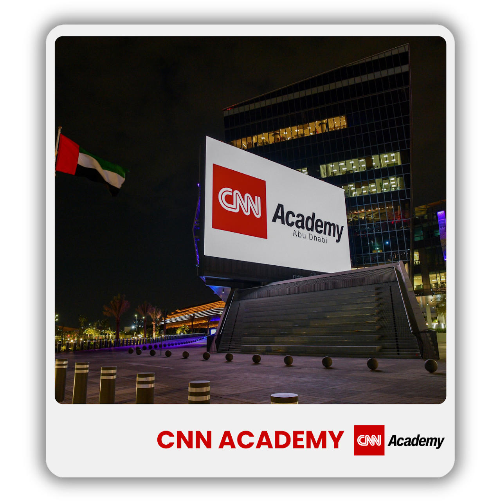
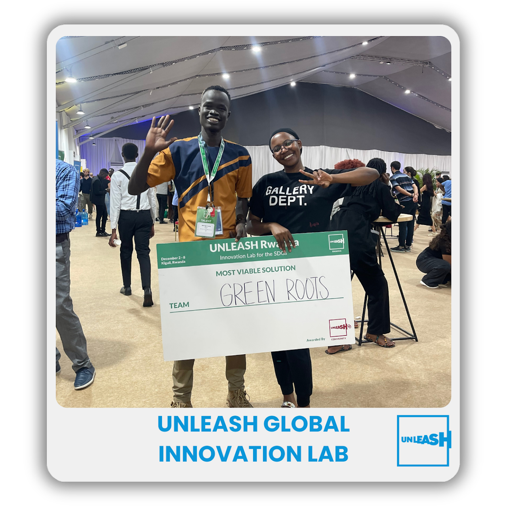
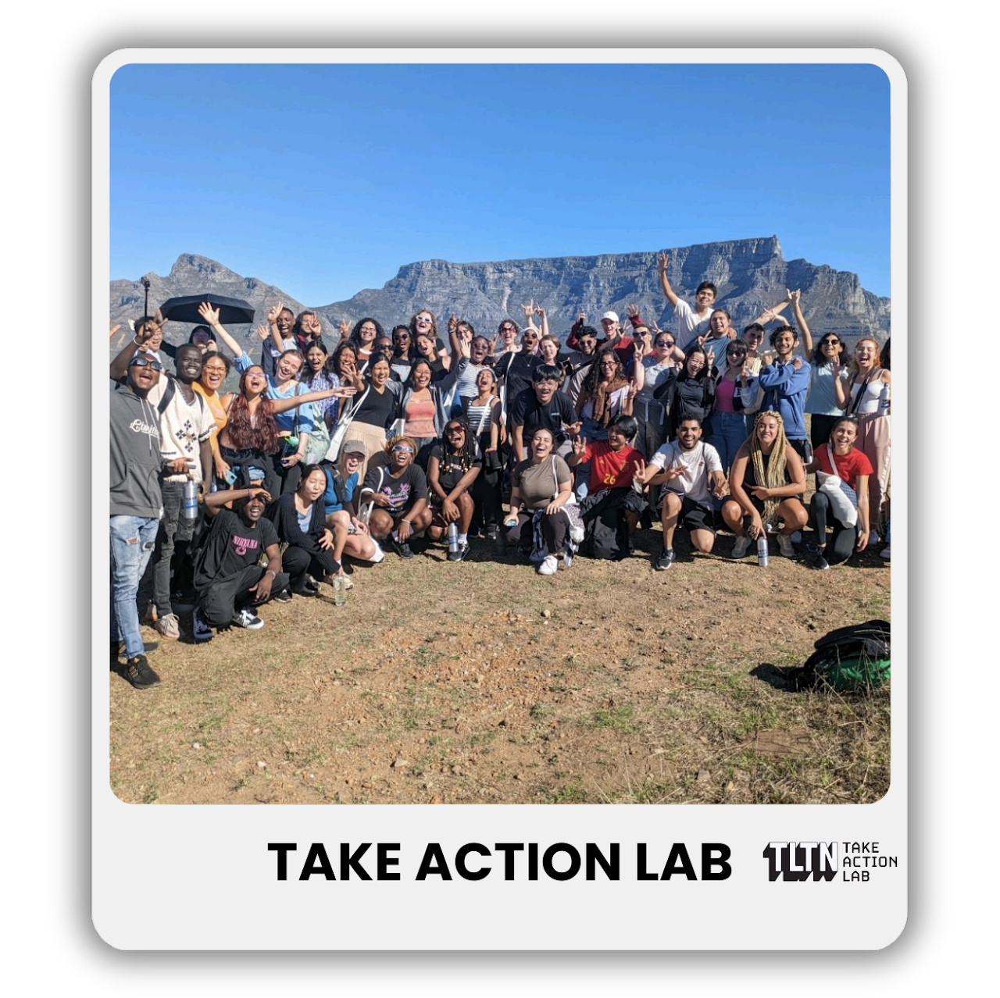
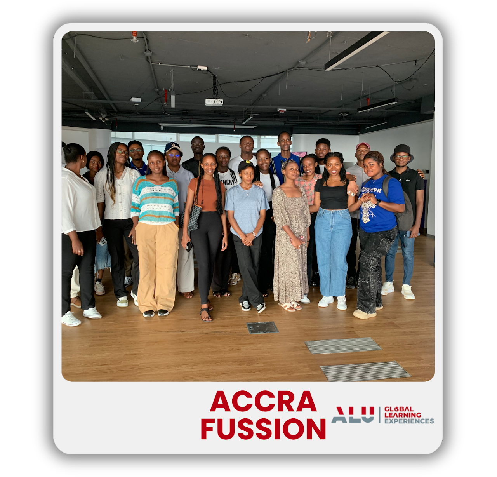
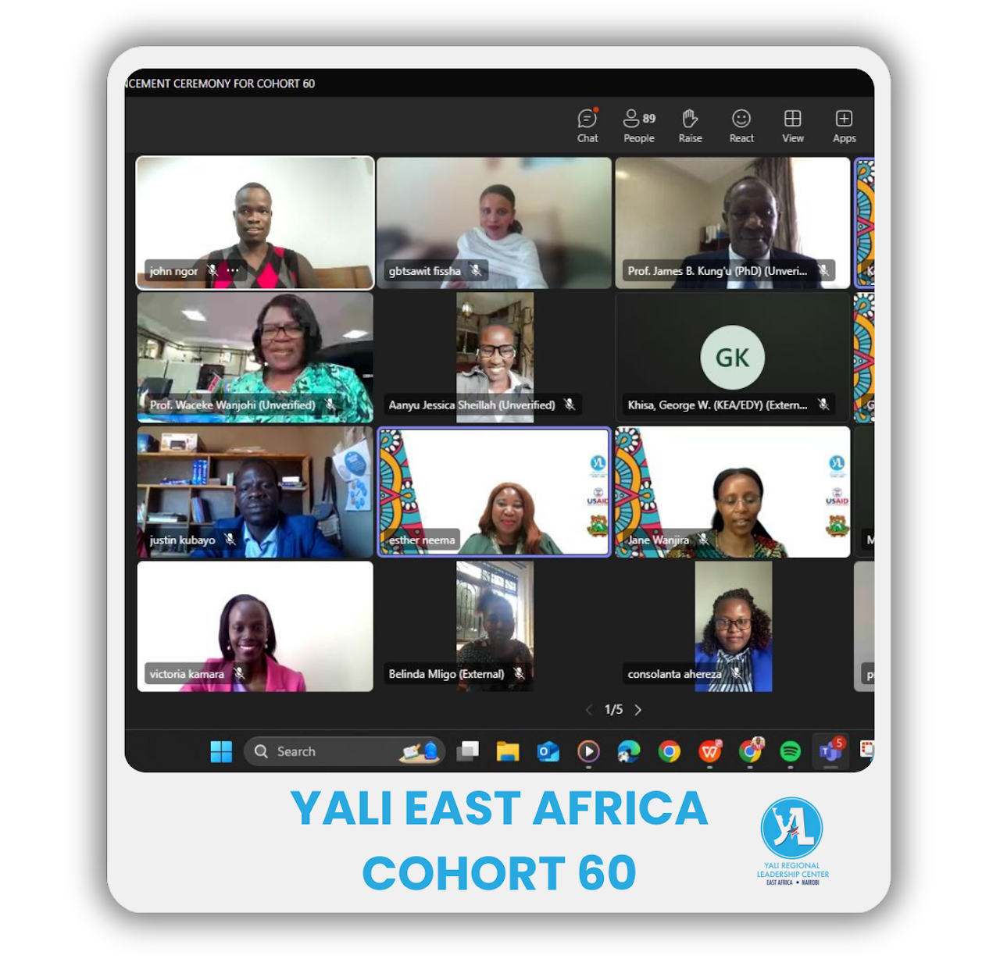
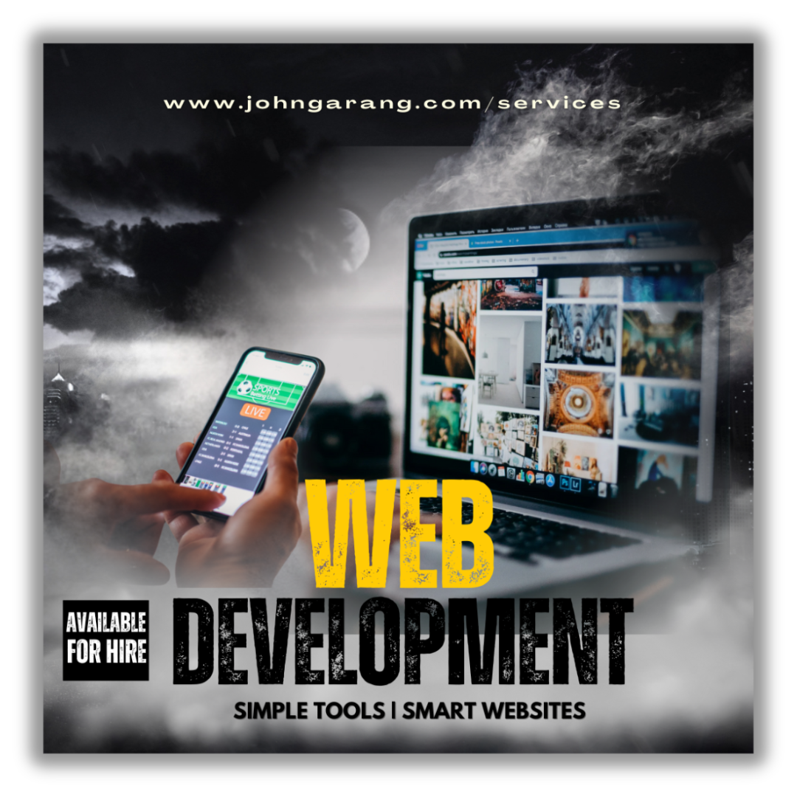
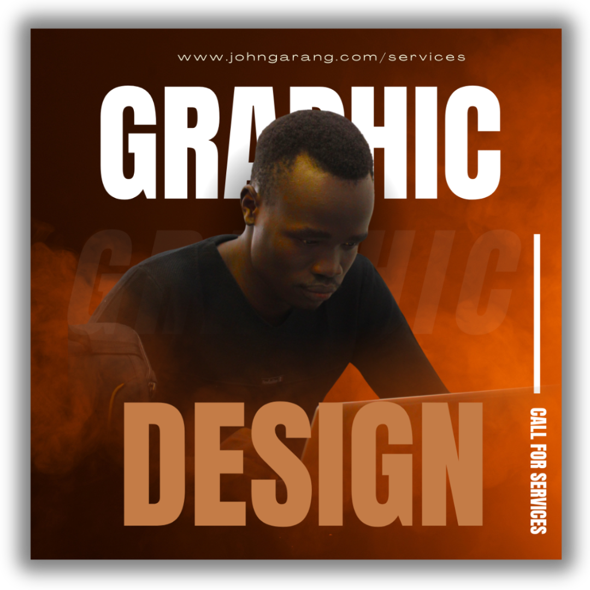

Digital Communications
"I want to make beautiful things, even if nobody cares, as opposed to ugly things. That's my intent."
Strategic storytelling, creative design, and impactful digital solutions
I'm John Ngor Deng Garang, a digital communications professional specializing in strategic content creation, brand storytelling, and digital marketing. With experience spanning multiple continents and industries, I help organizations amplify their message and connect with their audiences.
Data-driven strategies that align with your business goals and deliver measurable results across all digital channels.
Award-winning design and content that captures attention, tells compelling stories, and drives engagement.
Proven track record of delivering projects on time and exceeding client expectations with tangible outcomes.
Blending creativity with strategy to deliver impactful results
I begin by understanding my client's vision and brand. I ask straightforward questions to learn about their goals, target audience, and design style. Next, I create some initial ideas and work closely with them until the final design meets or exceeds their expectations. I truly enjoy working independently.
I also start by grasping what my client needs and wants. I develop a simple plan that outlines the project details, timeline, and main features, with a focus on ease of use and responsive design. I stay in touch throughout the project, providing updates and asking for feedback until the website is complete.
I listen carefully to capture my client's voice and message. I discuss their style and key ideas, then prepare a draft for them to review. We work together until the final piece clearly reflects their unique style and speaks to their audience.
Global experiences shaping my professional journey

Advanced journalism and media training

Global innovation and sustainability

Leadership and social impact

Cultural exchange and innovation

Young African Leaders Initiative

Custom website design and development that reflects your brand identity and drives conversions. From concept to launch, I create responsive, user-friendly websites that engage your audience.

Visual communication that tells your story and connects with your audience. I create compelling graphics that enhance your brand presence across all marketing channels.
Professional content creation that captures your voice and expertise. From blog posts to marketing copy, I help you communicate effectively with your target audience.